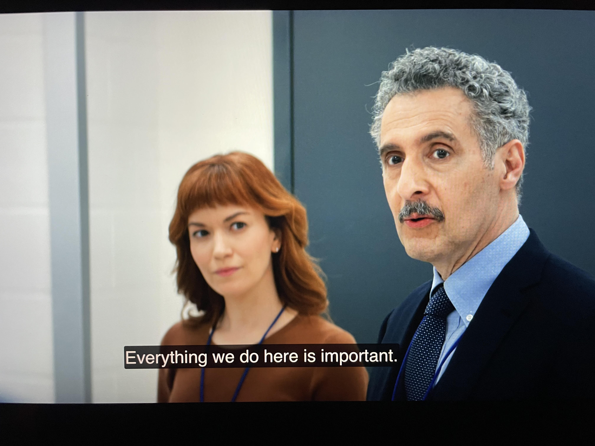
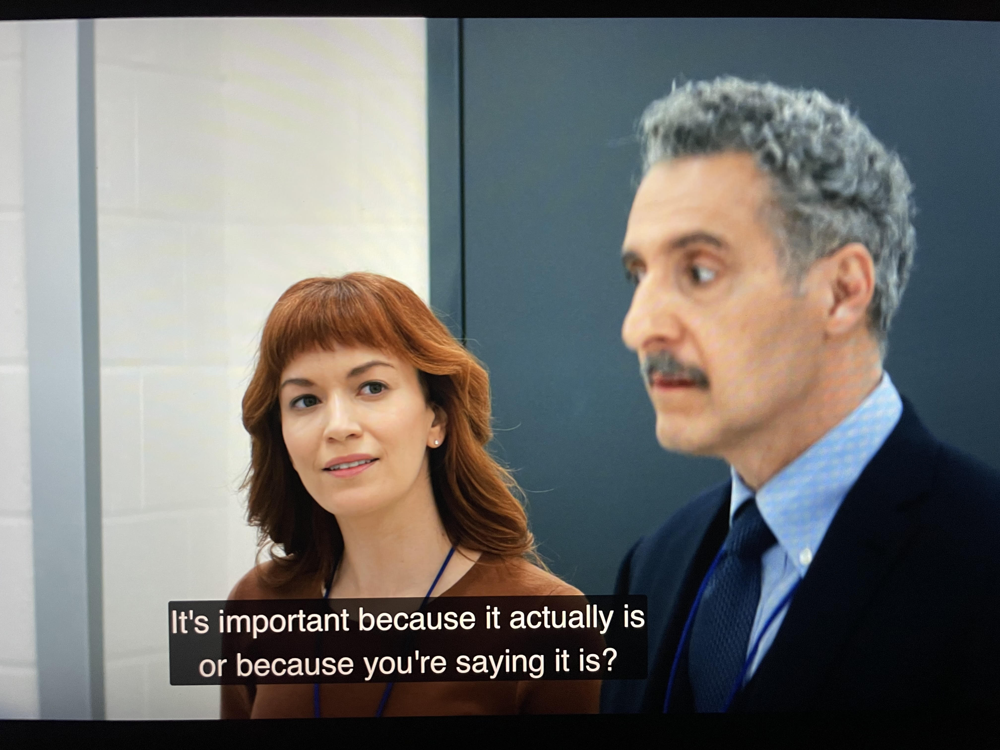
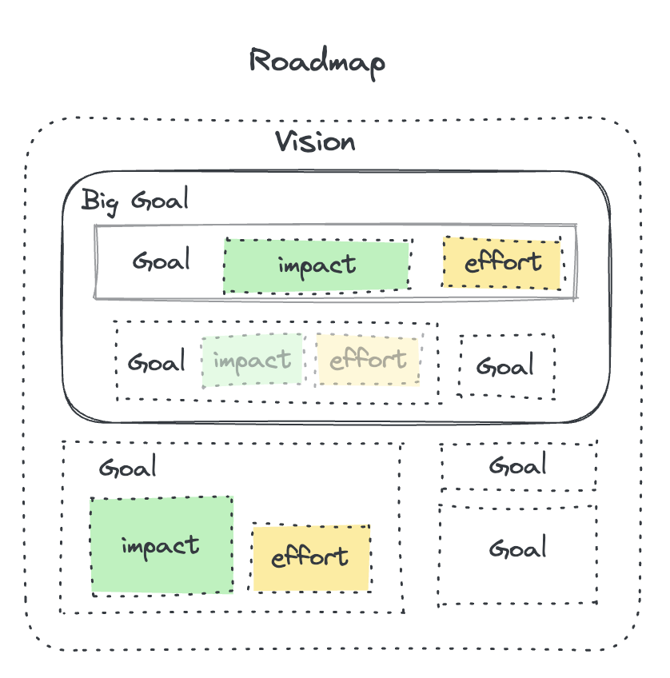

Planning for Why
Your work is going to fill a large part of your life, and the only way to be truly satisfied is to do what you believe is great work. And the only way to do great work is to love what you do. If you haven’t found it yet, keep looking. Don’t settle. As with all matters of the heart, you’ll know when you find it.
– Steve Jobs
Why?
Humans are hard-wired to achieve goals. Yet, project managers in software development insist on translating those goals into tasks. Projects are broken down into deliverables, then into tasks that fit on a Gantt chart. With each translation step from user to developer, the reason for individual action is eroded away. Projects are a useful construct for management to initiate, control, and terminate resources, but they’re terrible at motivating developers.
A project is a unit of account for effort allocation towards one goal. The level of granularity is divided at effort exerted, not the subgoals achieved. With projects, a rigid project plan where information flows through a central node, the project manager. This works when the effort needed is known and the goal doesn’t change. In a complex environment such as software development, that’s never the case.
What ends up happening when project management (aka Waterfall) is applied to software? The Project manager (PM) becomes the bottleneck for information, and frequent status updates are required to maintain priority order. When the goal or the estimated impact is changed, the PM must modify the plan and re-assign tasks. Decisions are centralized and developers are told which tasks are more important than others.
 |
|---|
 |
| Exerpt from the show Severance |
Thus, the joy of work that is dopamine from goal achievement has been taken away from developers. Autonomy is achieved only when rewards are connected to the effort. Otherwise, fear of authority is the only remaining motivator: compliance. Developers need be able to dynamically reprioritize tasks on a flow of new information.
To achieve this, the following must happen:
- Eliminate gatekeepers of user impact signals
- Dynamically reprioritize goals at the team level
- Derive tasks from goals at the point of commitment
This is what self-organizing team means. It requires each member to share the vision and embody the values of the product to be built.
Goals
If you embark on a journey through the vast sea of possibilities, don’t expect to navigate it with wheels meant for land.
– ChatGPT
If not projects and its lingo, then how else should work be organized? The PM can’t just throw the project charter at developers and expect a result?! Use goals. Goals can be broken down from the vision via a roadmap.

A roadmap is an outline of the problems your team plans to solve, the impact of solving them, and the order in which they will be addressed. It demonstrates how your actions contribute to the whole by showing a prioritized breakdown of goals.
A vision is an overarching view of the state of the world in the future that you are making together.
A goal describes how the world would progress if your team worked towards its vision.
Goals in everyday language can be aspirational, but we opt to use a more specific definition here. A goal often has the form:
Increase metric by (percentage OR amount ) for value
This looks like OKRs, but not all OKRs are goals. Objectives (The O in OKR) are goals but not all reasons can be a part of an objective. A goal can be described by how the world would be different after it’s been achieved; it’s an outcome focused on the user or the beneficiary. Goals are not outputs given by the performers of work. Goals are more than just aspirations or a vision, in that they have a metric assigned to them. It should be measurable, and have the ability to be verified.
Here are some examples:
| Goals | Not Goals |
|---|---|
| Reduce Eng hours spent on maintenance by 30 hours/week | Implement tooltip anchor points including Console support |
| Increase revenue from direct partners by 10%. (20M/quarter) | Implementation & testing for Dialog V2 |
| Increase usage by existing users by 10% | Work with UX to create a new home feed placement that leverages our carousel format for onboarding |
A goal described in this way always describes how the world changes when it is done. It never describes what to do. Which metrics and targets to use are guesses to be discovered, not necessarily mandates to be impressed. Almost always, one of these metrics will be an order of magnitude greater than the next for a given effort.
Planning
Trust and vision are required for planning. Developers must trust leadership in their vision, and leaders must trust that development team is aligned to the goals on the roadmap. This is a big requirement because intrinsic motivation can’t be asked. Not all individuals may share personal values that align to the vision at the onset. But if they chose to work on the product, then the assumption is that its development is a channel to express their values.
| It’s the leader’s job to shape the vision into commitable goals |
The outcome of the planning activity shouldn’t be what to do, but to derive commitable goals and to instill confidence that the team can achieve those goals. A product increment is an implementation of the goal fulfillment, whose feedback measurements from the users/market indicate its doneness.
A goal is not completed until its impact is verified
Conventional planning in Scrum or other project management software dictates a list format for prioritization. But a flat list is no way to express a tree-like structure of a roadmap. Backlog grooming is a Scrum activity to periodically prune and re-prioritize tasks, but it’s not needed if the roadmap and its goals are always in priority order.
Instead of breaking down project work into deliverables or backlog items, start with the vision. Take the difference between the current state and the vision, and that’s the start of the roadmap. Decide on metrics that would indicate success, and only then formulate goals.
When there are competing alternative implementations to achieve a given goal, estimate the effort to prioritize the goal with the highest impact per effect. Both impact and effort may be wild guesses at this point, but it’s better than not estimating at all. Estimating effort also helps developers spread expertise when there are discrepencies between individuals.
If the outcome is not certain, include its probability of success as a part of the goal’s impact and payback.
Sequencing of goals should follow Set-Based Design.
When working on a goal, work together to form a Developer-Ordered Work Plan. The work plan should be a means of coordination, not a source of authority unlike a project plan.
Learn more on YouTube: